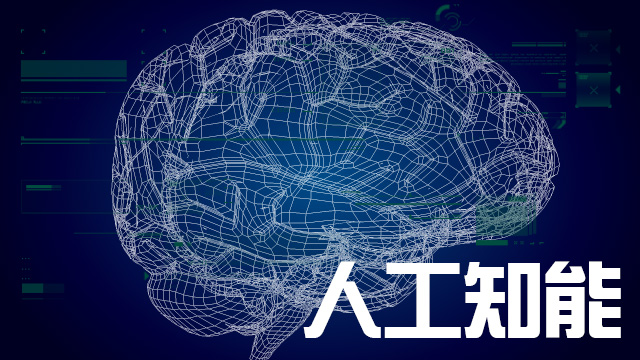

最後の砦とされた囲碁
ちょっと衝撃的なニュースがありました。
囲碁界のトッププロである韓国のイ・セドル氏が、囲碁において一勝四敗で完全に負け越したというのです。
相手はgoogleの研究グループが開発した囲碁の人工知能ソフトだというではありませんか。
実は私は囲碁のルールをよく知りませんでした。
何となく「自分の陣地を多く持った方が勝ち」という程度の認識のみです。
詳しく知ろうとしなかったのは、奥深いという聞きかじりの知識と、見た目からして明らかに「本格的にやろうと思ったら大変だぞ」と思わせるものがあったから。
将棋やチェスも相当に頭を使う競技だとは思いますが、これらは駒それぞれに明確な役割分担（個々の動き方の特性）があります。
ところが囲碁はどうでしょう。あるのは役割のない同じ碁石のみ。
このようなシンプルな設計のものほどやっかいだということだけは直観的にわかります。
（※今回のニュースを機に初めて囲碁のルールをちゃんと調べてみたのですが、やはり私にとってはやっかい極まりないものでした）
将棋やチェスで人工知能がプロに勝ったというニュースは時折耳にしていて、「まあ仕方ないのかもな」という感想は持っていました。
‘何手も先を読む’ということが勝利への最低条件だというならば、幾通りものパターンを瞬時にはじき出すことのできる機械の方が有利だろうことは明白だからです。
囲碁も先を見通すということは当然必要な要素ですが、広い盤面である程度自由に石を置いてよいというシンプルな条件ゆえ、対局の総パターン数の桁が違います。
NHKの特集記事から対局のパターン数を抜粋しますと…
将 棋：約10の220乗
囲 碁：なんと10の360乗以上
文字通り桁違い。
だから人工知能と言えども、囲碁でプロを負かすのはまだ先だろうという話でした。
そのような意味で、囲碁は‘最後の砦’とされてきたわけです。
が、とうとう囲碁までもが…。
いま人工知能はどこまで出来るのか
あまり興味のない人にとってはどうでもよいニュースかもしれません。
でも私自身は少なくとも複雑な心境になりました。
でも、それは単に人間がコンピュータに負けたからではありません。
要するに、この勝負が人間の文化的な営みである知的遊戯の舞台だったからだと思うのです。
歴史と文化のある舞台において、ひとまず人間の知恵が‘処理能力’に負け越してしまったという残念な気持ちと、「その方法で科学の進歩を確かめなくても（笑）」という反発心のようなものがミックスされたのかなと。
ただ、今の人工知能というのは、‘知能’と言うだけあって、単に機械的な処理のみがプログラムされているわけではないようです。
知能の根幹にあるのは「ディープラーニング」。以下、NHK newswebより抜粋。
今回、プロ棋士を破った「ＡｌｐｈａＧｏ」。その実力を飛躍させたのは「ディープラーニング」と呼ばれる技術を取り入れたことです。
最近、人工知能の分野で大きな注目を集めている最新の技術です。「ディープラーニング」とはなんなのか？簡単に言うと、これまでは命令にしたがって答えを計算するだけだったコンピューターに、人間の脳と同じような働きを取り入れたものです。人間の脳の中では、一つの神経細胞から別の神経細胞に膨大なデータが送られています。たえず神経のネットワークの中を情報が行き来している状態です。しかし、ただ情報をやり取りしているだけではありません。人間の脳は、過去の学習に応じて、必要な場所に必要な情報が伝達されやすくなるように少しずつ調整が加えられていきます。つまり、学習により、ネットワークの必要な部分が強化されていくのです。学習すればするほど、より的確な判断ができるようになると考えられています。ディープラーニングでは、あらかじめ「問題」と「正しい答え」をコンピューターに入力して学習を行います。しかし、その問題の「解き方」については入力しません。その部分はコンピューター自身に考えさせるのです。そうすることでコンピューターの内部にあるネットワークは、正しい答えにたどり着く経路が強化され、逆に間違った経路は弱まっていくことが分かったのです。
これは人間の脳が学習していく仕組みに非常によく似ていると考えられています。これがディープラーニングと呼ばれている技術です。
つまり、人工知能は‘学習’し、‘成長’すると解釈できそうです。
本当か？
だったら、知的遊戯の他に芸術や音楽も創作できるというのか。
実はある程度できるようなんですね。
絵画については人工知能がそれなりのものを描くというのは以前から知っていたのですが、実は音楽も作曲できるようで、すでに映画やゲームのBGMとして利用されているというのです。
もちろん、膨大なデータベースを参照して曲の基本構成から見えてくるものに従って作曲するのですが、少し聴いただけでは機械が自動作曲したとは思えない出来栄え。
まあ私が聴いたのはクラシックで、クラシックなんて（と言ったら怒られますが）、素人が聴いたらどれも同じに聞こえるわけで、「模倣でしょ？」って思っちゃいますが。
実際、歌謡曲については、人工知能が作曲するものは歌いにくい旋律になるとのこと。
しかし今後、人間の好みに合う形で新たなジャンルの曲ができたり、歌いやすく心に残るメロディーラインを作曲するまでになったら、これはもう脅威としか言いようがありません。
絵画や音楽までならまだしも、まさかの「小説」執筆までできるようになるのでしょうか。
少なくともソフトバンク社長の孫正義氏は、「今後30年でコンピュータのIQ（知能指数）は１万に達する」「人工知能は人間の知能を超える」と述べています。
人間の平均IQが100であることを考えると、それはすごいですね…。
もし、人間と同じサイズで、あらゆる分野に関して‘思考’‘処理’‘創造’‘行動’‘社交’ができ、なおかつそれらを複合、総括して‘生きる’ことができるとするならば、それは新たな「人類」の誕生と言ってもよいかもしれません。
人間の可能性はどこに？
人工知能が学習能力を持つからと言って、あくまでそれも‘プログラム’に従って作動しているに過ぎない、という考えがあります。
逆に思うことがあります。
では、人間はプログラムで動いていないのか？ということ。
唯物論的な観点からすれば、人間の脳を構成しているのは全て、有機物であり、炭素・窒素・酸素・水素を基本とした原子の組み合わせに過ぎません。
そこで電気信号という刺激が伝達されているだけです。
人間には感情・意志などといった機械には持てないモノがある、と主張してもそれは人間がプログラムされた範囲の中で持たされている化学的結果であるという考えに、どうやって反論できるのでしょうか。
人工知能はそれが金属を中心とした原子の組み合わせになっているだけで、単なる化学反応のおりなすものとしては人間も同じであるという見方もできるはずです。
ただし、人間の精神世界はまだまだ未解明な部分も多く、単に目に見える世界（実際に人間の目に見えるというだけでなく、科学的な視点も含む）だけでは説明できないような体験や現象があることも事実です。
人間が人工知能とは違うと言うならば、今後は私たちの精神にこそ研究の目を向けていくのが自分たち自身の可能性を広げていくこと、つまり人間にしかできないことを模索していく王道路線なのではないでしょうか。
そのためには宗教・哲学・物理学・宇宙論など一見独立したように見える学問の関連性を見出していくような学びが必要だと思います。
このあたりはいつかウチの庄本氏が語ってくれることを願っています。
と言いながら、数十年後に人工知能が自らの精神世界を探求している世の中になっていたら白旗を上げてしまいますが（笑）。